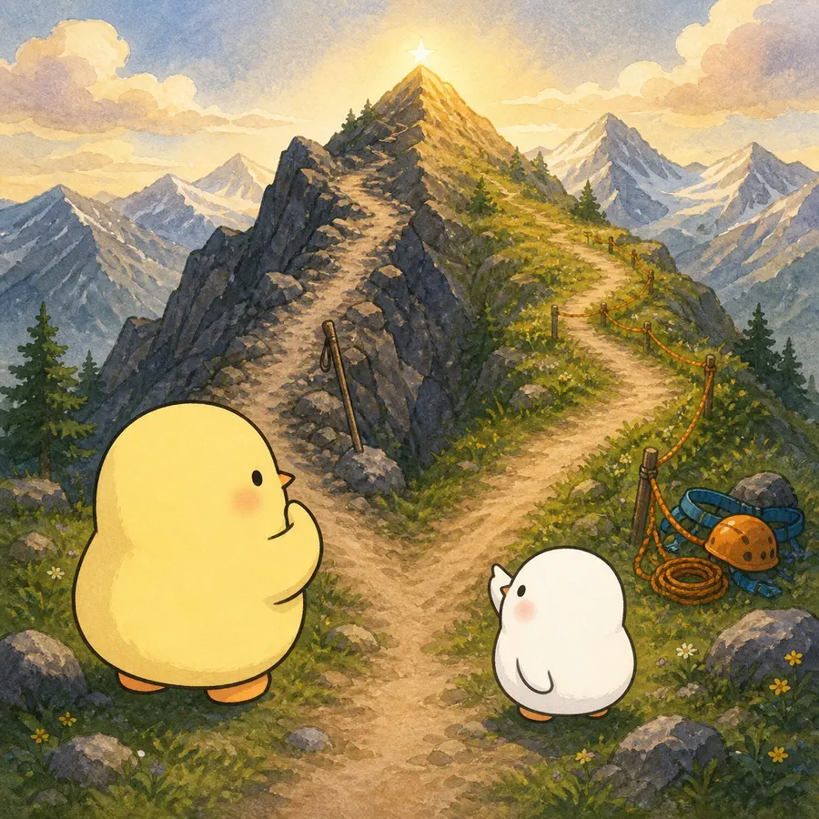
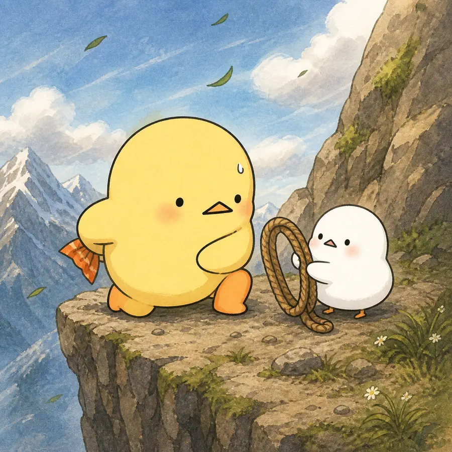
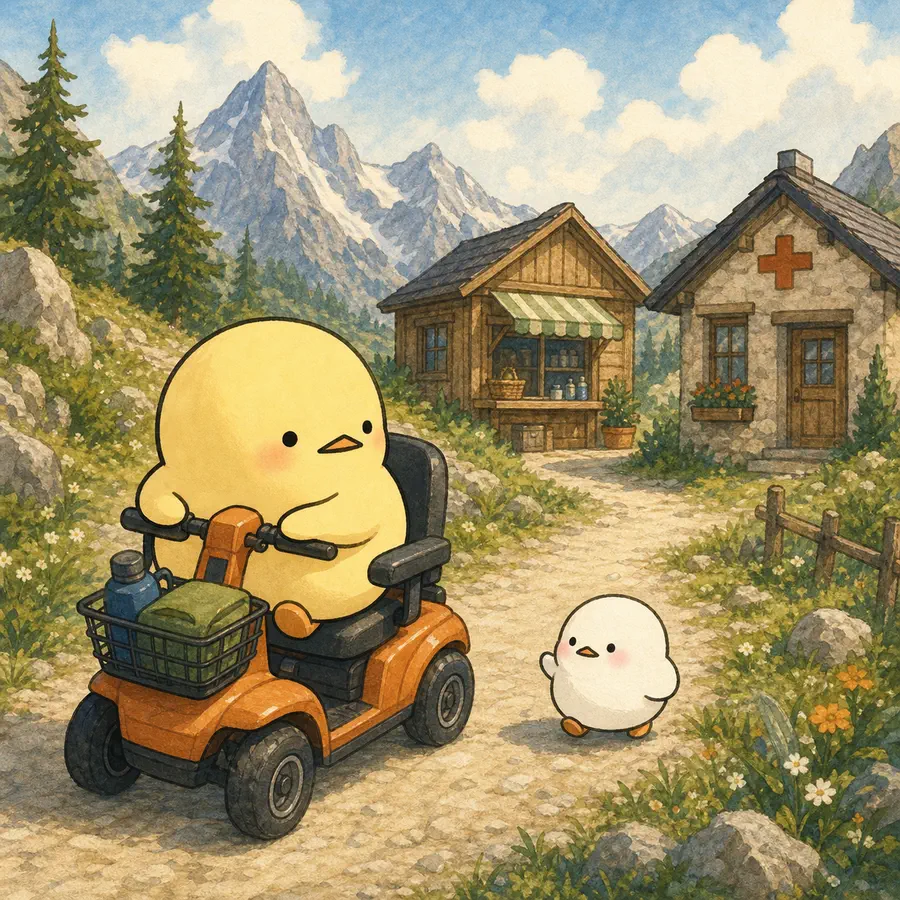
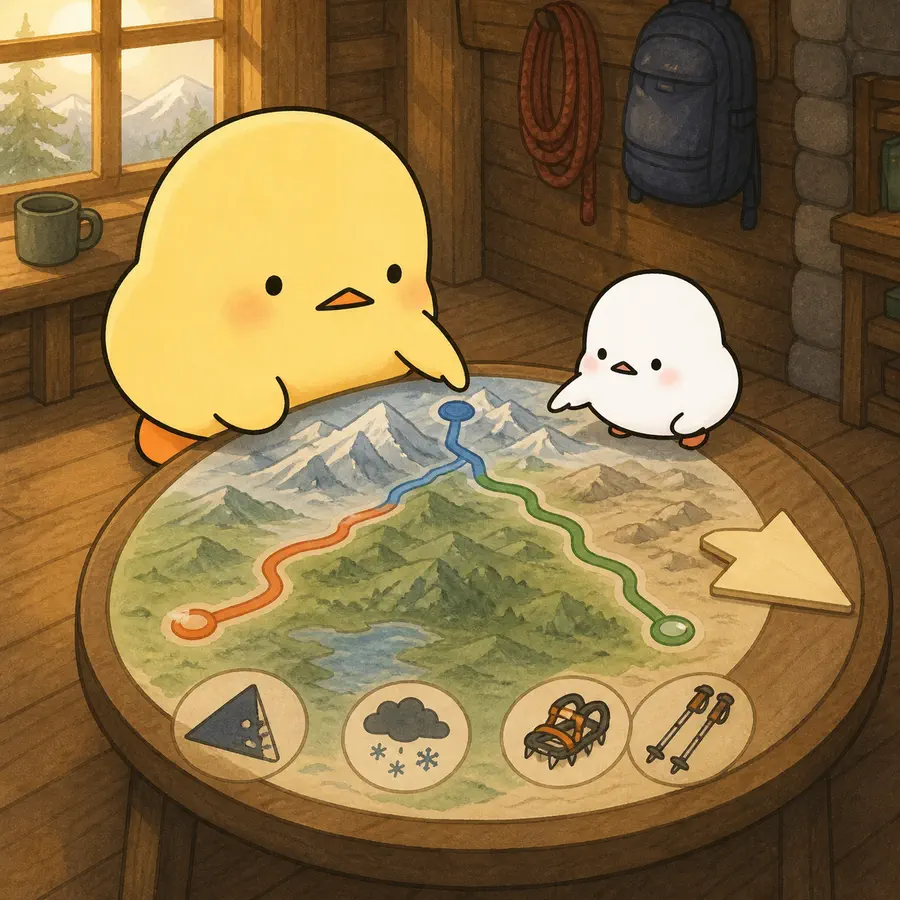

ILLUSTRATED OVERVIEW
‘I’ve Been Independent for So Damn Long!’: Independence, Masculinity and Aging in a Help Seeking Context
옆으로 넘겨 4컷 보기
-

같은 ‘독립’에 자기의존의 남성성 규범과 기능·삶의 질을 지키는 노화의 의미가 겹친다.
-

강하고 통제해야 한다는 자기의존은 타인에게 부담이 되기 싫다는 마음과 만나 도움 요청을 늦출 수 있다.
-

보조수단의 수용은 의존의 패배가 아니라 일상기능과 자기결정을 회복하는 ‘재구성된 독립’이 될 수 있다.
-

실천은 독립을 완고함으로 낙인찍기보다 연령·젠더·건강·관계 맥락 속에서 건강을 돕는 방식으로 다시 협상해야 한다.